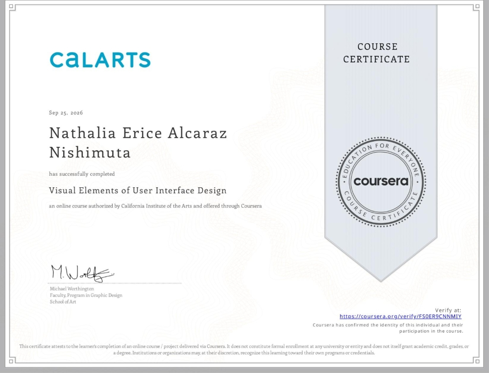
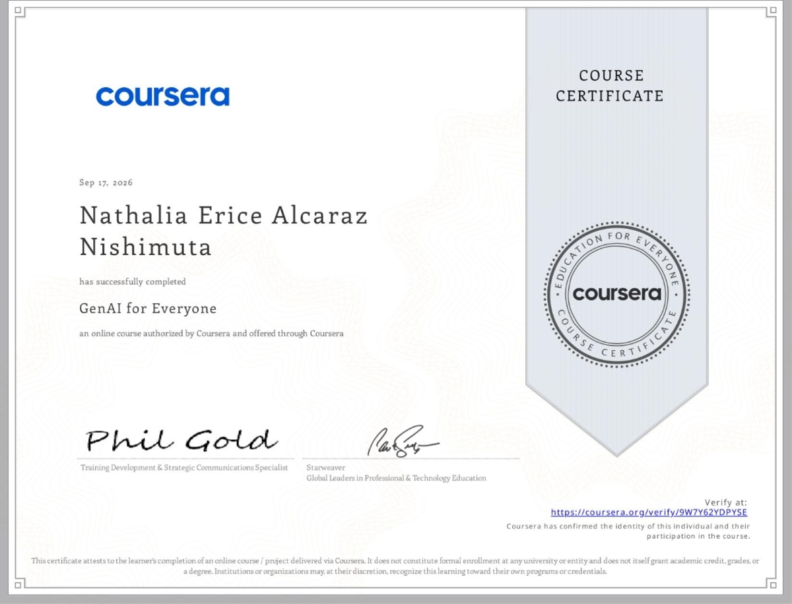
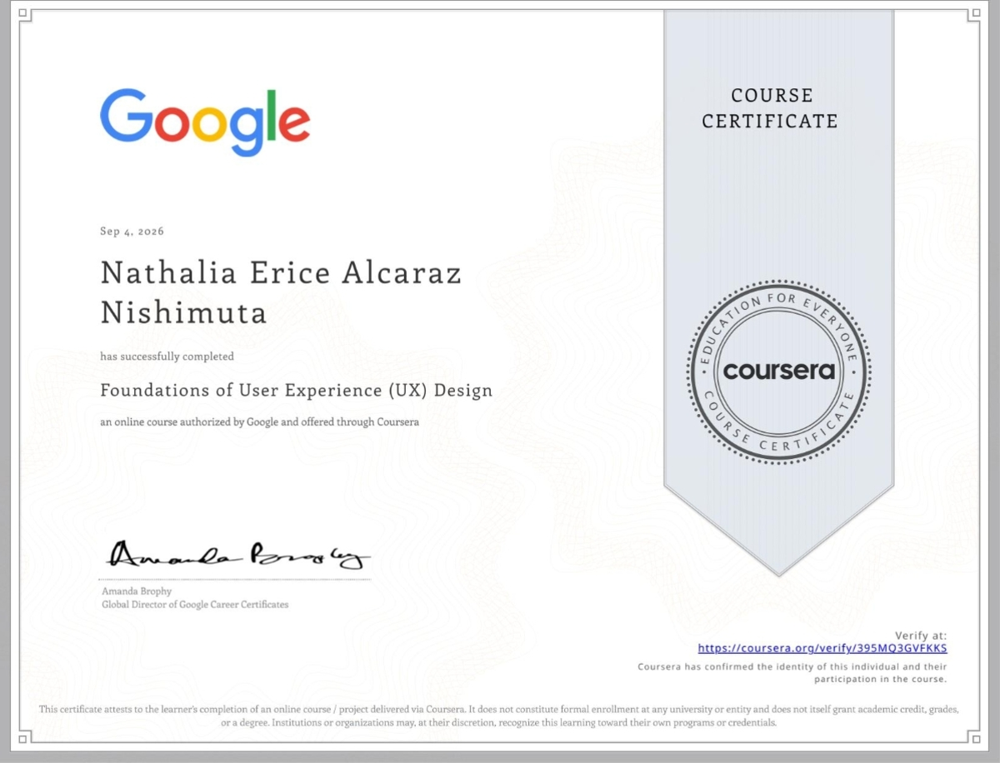
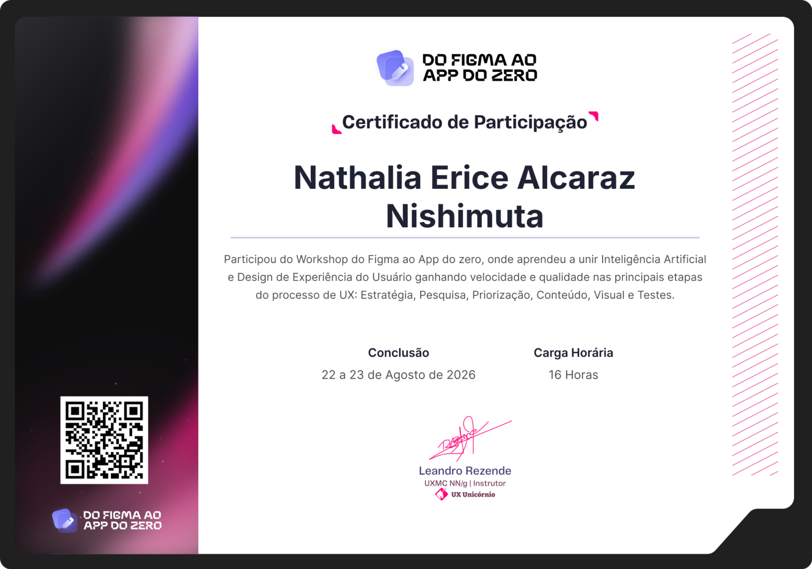
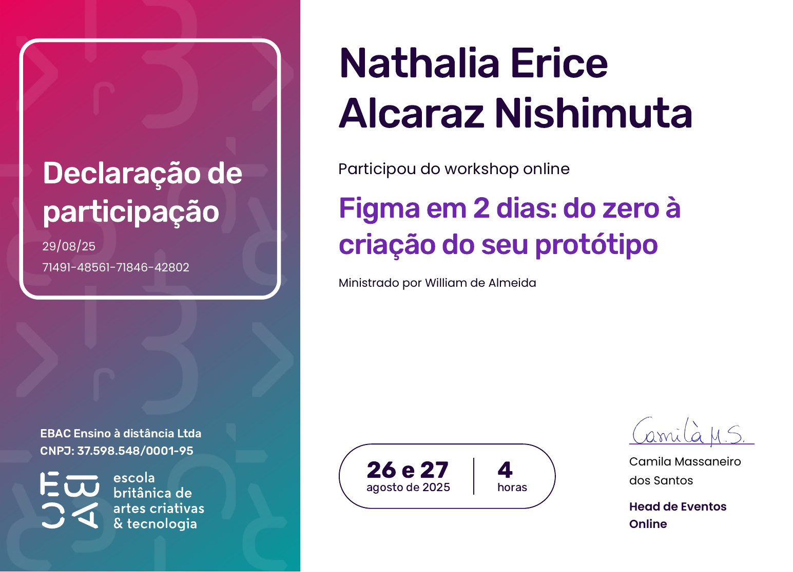

1/9
Estudo de caso · publicado
Heloísa Nail Designer — da marca ao código
Identidade visual, pesquisa, UX e landing page de agendamento para uma nail designer de Santo André.
Baixar estudo de caso (PDF)Portfólio · UX/UI Design
Venho da Psicologia para o design: quero criar produtos que entendem as pessoas.
01 — Sobre mim
Estudei Psicologia na Uninove (não concluído) e hoje estou em transição de carreira para UX/UI Design e Front-end.
Quero unir tecnologia, psicologia e arte para criar produtos que entendem as pessoas. Sou mãe de duas meninas e estudo com rotina e disciplina.
Onde tudo começou
School of Game, Arts and Animation
Concluído em 2016 2 anos 2x por semana, 19h–21h
Moro em São Paulo, Brasil.
02 — Certificados concluídos
Do mais recente ao mais antigo.

25/09/2026
CalArts (Coursera)

17/09/2026
DeepLearning.AI (Coursera), pela trilha Santander “Fundamentos de IA Generativa”

04/09/2026
Google (Coursera)
03 — Em formação
Curso 2 de 8
Google UX Design Professional Certificate
Google (Coursera)
Cursos 2–4
Especialização UI/UX Design
CalArts (Coursera)
Out–nov/2026
Imersão Engenharia de Software
Alura
Out/2026
Design Cognitivo
TheStarter
Recode
Curso e mentoria
04 — Workshops & cursos livres
Do mais recente ao mais antigo.
aprendendo sempre ✏️
Out/2026
Masterclass “Seu agente funciona sozinho. Mas ele sobrevive em produção, orquestrado com outros?”
Alura + FIAP Skills & Go
28/09/2026
Imersão Agentes de IA para Negócios
Alura / Oracle Next Education (ONE)
22–23/08/2026
Workshop Do Figma ao App do Zero
UX Unicórnio, com Leandro Rezende (UXMC NN/g)
IA aplicada ao processo de UX: estratégia, pesquisa, priorização, conteúdo, visual e testes.

05/12/2025
Curso UX Design: entenda a área da User Experience
Alura
26–27/08/2025
Workshop Figma em 2 dias: do zero à criação do seu protótipo
EBAC, com William de Almeida

20/06/2025
Algoritmos e Lógica de Programação
Workover Academy
Fev/2023
Webinar “Experiência do consumidor: o papel e alto impacto de UX/CX Design”
Mentorama, com Felipe Caroé
05 — Habilidades
06 — Projetos
1/9
Estudo de caso · publicado
Identidade visual, pesquisa, UX e landing page de agendamento para uma nail designer de Santo André.
Baixar estudo de caso (PDF)Um aplicativo para mães organizarem estudos, trabalho e a rotina dos filhos.
Mais estudos de caso chegando em breve.
07 — Contato
Me chame no LinkedIn ou escreva para nishimutanathalia@gmail.com.